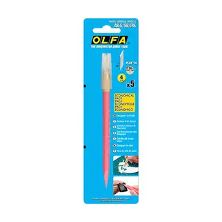
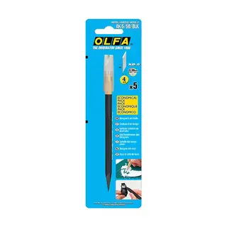
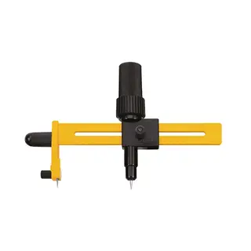
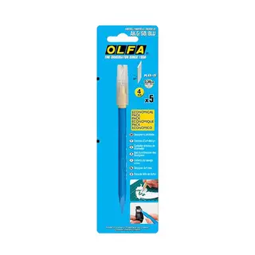
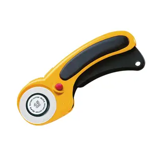
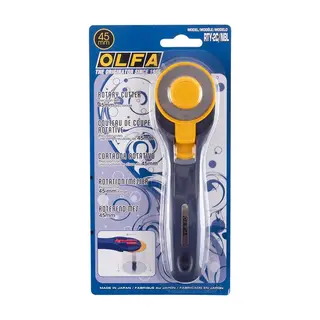

 OlfaCuchillo Tipo Lápiz con Ángulo de 30° Pink con RepuestosCódigo AK-5/5B/PIK CotizarVer detalle
 OlfaCuchillo Tipo Lápiz con Ángulo de 30° Black con RepuestosCódigo AK-5/5B/BLK CotizarVer detalle
 OlfaCompás de Corte con Sistema de giro + 10 RepuestosCódigo CMP-1DX CotizarVer detalle
 OlfaCuchillo Tipo Lápiz con Ángulo de 30° Blue con RepuestosCódigo AK-5/5B/BLU CotizarVer detalle
 OlfaCuchillo Rotativo de 45 mm. para Tela Doble SeguroCódigo RTY-2/DX CotizarVer detalle
 OlfaCuchillo Rotativo de 45 mm. para Tela Color NavyCódigo RTY-2C/NBL CotizarVer detalle